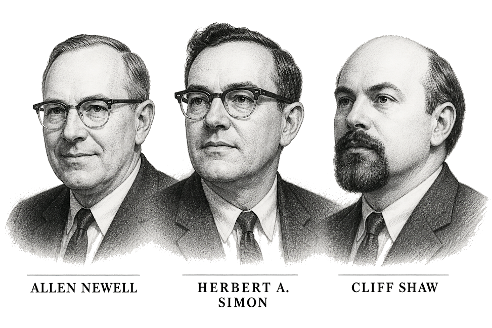

LOGIC THEORIST
NEWELL · SIMON · SHAW / 1955–1956
THEOREM PROOF SESSION
¬p → (q ∨ ¬p)
INPUT STATEMENT: IF NOT P, THEN Q OR NOT P TRANSFORMATION: A → B ≡ ¬A ∨ B PROOF: ¬(¬p) ∨ (q ∨ ¬p) p ∨ q ∨ ¬p (p ∨ ¬p) ∨ q TRUE ∨ q RESULT: ⊢ TRUE
PUNCH CARD / AXIOM SET
SEARCH TREE / BRANCH ACTIVE
THEOREM VERIFIED
IPL MEMORY ACTIVE
SYMBOLIC REASONING ENGINE READY
PROOF SEARCH: SUCCESSFUL
OUTPUT: THEOREM PROVED
█